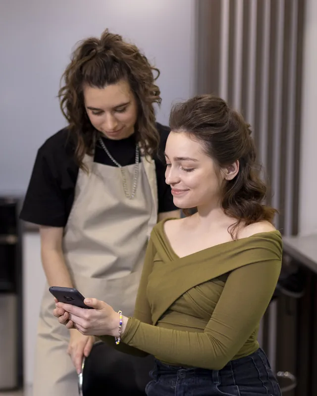

Light
149 €al meseIVA inclusa
- ANIMA: gestionale, calendario e cucina
- SABE al telefono del locale
- 350 minuti inclusi al mese
- Minuti extra 0,45 € al minuto
SABE · il telefono del locale
SABE risponde a ogni chiamata del locale: prenota, prende gli ordini e scrive tutto in ANIMA.
Non solo ristoranti: per barbieri, parrucchieri ed estetisti risponde allo stesso modo e prende gli appuntamenti.
Linea del localeANIMA · agendaANIMA · cucinaRegoleSempre attivoStaffUn venerdì qualsiasi, dalle sei a fine servizio. A sinistra quello che si dicono il cliente e SABE, a destra quello che compare in ANIMA.
Tutto quello che fa in una telefonata, e quello che succede dopo.
Prenotazioni: Nuove prenotazioni, con il controllo dei posti, Modifiche di giorno, ora, persone e note, Disdette, sempre con conferma, Se è pieno, propone due orari liberi. Ordini: Asporto e consegne a domicilio, Richieste sui piatti e metà e metà, Zona e orario di consegna controllati prima, Riconosce chi richiama: nome e ultimo indirizzo, Totale riletto, ordine in cucina a fine chiamata. Informazioni e staff: Allergie, con la regola del locale, Orari, prezzi e indirizzo, Passa la chiamata allo staff, Se nessuno risponde, il locale richiama entro 30 minuti. Dopo la chiamata: Tutto in ANIMA, con l'origine «Agente vocale», Notifica allo staff, Chi non ha prenotato finisce fra i contatti da ricontattare.
Il numero resta il vostro: risponde sempre SABE, e quando serve passa la chiamata al personale.
SABE lavora anche per parrucchieri, barbieri, estetisti e studi medici: fissa, sposta e disdice gli appuntamenti nel calendario.

ParrucchieriIn Italia il telefono porta ancora una buona parte delle prenotazioni, e ogni chiamata senza risposta è un tavolo vuoto o un ordine andato altrove. Ecco i numeri dei ristoranti italiani; poi calcola i tuoi.
Sposta i cursori con i numeri della tua attività: è quanto ti costano oggi le chiamate perse, e quanto SABE può recuperare. Poi c'è quello che risparmi: rispetto a una persona al telefono, il conto di un anno è questo.
Quanto hai speso in tutto, mese dopo mese: lo spazio fra le due linee è quello che resta al locale. Passa sul grafico per leggere ogni mese.
Il costo della receptionist è quello dell'anno, diviso per 12 mesi.
SABE arriva insieme ad ANIMA: le chiamate diventano prenotazioni e ordini nel gestionale.
149 €al meseIVA inclusa
249 €al meseIVA inclusa
Su misura
Contano i minuti delle chiamate a cui risponde SABE, al secondo: non contano le chiamate sotto i 10 secondi né quelle passate al personale. Con chiamate da 2 minuti, 350 minuti sono circa 175 chiamate. Il conteggio riparte a ogni rinnovo. Finiti i minuti inclusi le chiamate passano al tuo personale, a meno che tu scelga di continuare con i minuti extra.
Tu scegli come parla, al resto pensiamo noi: in pochi giorni SABE risponde al telefono del locale.
No, se non vuoi: colleghiamo SABE al numero di sempre, oppure ti diamo un numero nuovo dedicato. A ogni chiamata risponde subito SABE: il personale non deve più alzare il telefono, e quando serve una persona SABE gli passa la chiamata.
Passa la chiamata al personale. Se nessuno risponde, il cliente viene richiamato entro 30 minuti. Lo stesso vale per eventi e richieste particolari.
Prima di salvare controlla i posti liberi, rilegge il riepilogo e chiede «Confermo?». Prenotazioni e ordini arrivano in ANIMA, dove li vedi e li modifichi quando vuoi.
Sì. Prima controlla che l'indirizzo sia nella zona di consegna e ti dice l'orario più vicino possibile, poi prende i piatti e rilegge il totale. L'ordine va in cucina a fine chiamata, uno per telefonata.
Ci dai menu, orari e regole per prenotazioni, consegne e allergie: lo configuriamo noi. Prima di accenderlo lo provi con una chiamata vera.
SABE scrive in ANIMA, che è compreso nei piani: prenotazioni, ordini e cucina sono già lì, senza ricopiare niente.
Le lingue che vuoi: la configuriamo nelle lingue dei tuoi clienti, anche più di una.
Sì. Come prevede il regolamento europeo sull'intelligenza artificiale (AI Act), il cliente sa fin dall'inizio della chiamata che sta parlando con un assistente AI.
Le chiamate passano al tuo personale, oppure continui con i minuti extra: 0,45 € al minuto con Light, 0,39 € con Pro.